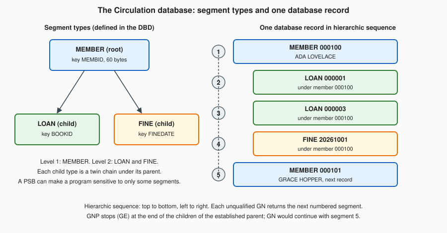

IMS DL/I Overview
|
This content was generated with the assistance of AI and should be verified against the official documentation before being relied on in production. |
This page is written against ISO/IEC 1989:2023 (edition 3, January 2023; an upcoming 4th edition is in ballot), which says nothing about IMS because DL/I is an IBM product interface and not part of the COBOL language; against IBM Enterprise COBOL for z/OS 6.5 (PTFs through September 2026) on z/OS 3.2; and against IBM IMS 15.6, whose Application Programming and Application Programming APIs manuals (the 2026 editions) were read for every call, field and status code shown. GnuCOBOL 3.2 (28 July 2023, the latest release) has no IMS support, so nothing on this page was run: the one complete program is "z/OS; not run here", and its source was only syntax-checked with cobc -fsyntax-only -Wall (and with -std=ibm), which reported no warnings and proves nothing about the DL/I calls themselves.
IMS (Information Management System) is two products that run together: IMS Database Manager (IMS DB), a hierarchical database, and IMS Transaction Manager (IMS TM), a transaction monitor with message queues. A COBOL program talks to IMS DB by calling a language interface module with CALL and testing a status code afterwards, which is a different style from the embedded SQL of Embedded SQL and Db2 or the commands of CICS Online Programming. This page covers the hierarchical model, the control blocks that describe a program’s view of a database, the call interface, the main calls, the status codes, a complete Circulation example, IMS TM in one paragraph, and where readers will meet IMS. The CALL statement itself is on Subprograms, CALL and Linkage, the LINKAGE SECTION and PROCEDURE DIVISION USING that receive the PCBs are there too, and the z/OS environment around a batch step is in Mainframe Environment Primer and JCL for COBOL Programmers.
Where the book is outdated: Taulli’s Modern Mainframe Development (2022, chapter 8) describes IMS DB and TM and DL/I calls with a PCB mask for IMS 15.1, which is one release behind the IMS 15.6 documentation used here; the DL/I call interface itself has not changed, so the ideas carry over. The book is a survey, so the call formats, SSA layout, PCB mask fields and status codes here come from the IBM manuals, and the Circulation database and program are original.
The hierarchical model
An IMS database is a collection of database records, and a record is a tree. The unit of data is the segment, a fixed or variable block of bytes (what a COBOL programmer would call a group item) that has a type name such as MEMBER or LOAN. The rules are few:
-
The top segment of a record is the root; there is exactly one root occurrence per record. Every other segment type is a dependent (a child of the segment above it, and a parent of the segments below it).
-
A parent can have many occurrences of a child type. Occurrences of one type under one parent are twins and are usually kept in the order of a sequence field (the key).
-
A segment has one parent only, so every segment is reached by a hierarchical path from its root. The concatenated key of a segment is the keys of the whole path, root first.
-
The segments of a record are numbered in hierarchic sequence: top to bottom, left to right, parents before their children and each child type in turn.
The Circulation run keeps its members and their loans in such a database. MEMBER is the root (key MEMBID, the same 60 bytes as the MEMBREC copybook of the whole section), LOAN is a child (key BOOKID) and FINE is a second child type. The diagram shows the segment types on the left and, on the right, one database record in hierarchic sequence.

Compare this with a relational design, where loans would be rows with a foreign key to the member. In IMS the parent-child path is the access path, which makes a retrieval along that path (a member and all their loans) very fast and very simple to program, and makes any other path (all the loans of one book) something the database designer has to plan for with an index or a logical relationship. This is why IMS databases are designed around the transactions that will use them.
DBD, PSB and PCB
Three kinds of IMS control blocks describe what a program may see, and a COBOL programmer meets all three even if the database administrator writes them.
| Control block | What it is |
|---|---|
DBD (database description) |
Defines one physical database: its segment types, the hierarchy, the field names (at least the sequence field) and how it is stored. It is generated by the |
PSB (program specification block) |
Defines one application program’s view: the list of PCBs the program uses. It is generated by |
PCB (program communication block) |
One entry in a PSB. A DB PCB names a database and lists the segments (with |
A program is therefore sensitive only to the segments its PCB lists, and the least capability needed (PROCOPT=G to read, A for get, insert, delete and replace) keeps data available to other programs. A PSB for the Circulation program below, as an excerpt (z/OS; not run here), looks like this:
PCB TYPE=DB,DBDNAME=CIRCDB,PROCOPT=A,KEYLEN=12
SENSEG NAME=MEMBER,PARENT=0
SENSEG NAME=LOAN,PARENT=MEMBER
PSBGEN LANG=COBOL,PSBNAME=CIRCPSB,CMPAT=YESKEYLEN=12 is the length of the longest concatenated key the program can see (the 6-byte MEMBID and the 6-byte BOOKID), and it is the size of the key feedback area in the PCB mask below. The PSB lists MEMBER and LOAN only, so the program is not sensitive to FINE and can neither read nor change fine segments.
The call interface from COBOL
A DL/I request is one CALL to the IMS language interface module. IMS gives COBOL programs three entry points. The first two take the PCB directly; the third takes an AIB (application interface block) that names the PCB:
CALL 'CBLTDLI' USING function db-pcb i-o-area ssa-1 ... ssa-15
CALL 'CEETDLI' USING function db-pcb i-o-area ssa-1 ... ssa-15
CALL 'AIBTDLI' USING function aib i-o-area ssa-1 ... ssa-15-
functionis a 4-byte alphanumeric data item holding the function code ('GU ','ISRT', …). Short codes are padded on the right with blanks. -
db-pcbis the PCB mask (below) that IMS passed to the program. It selects the database and holds the position and the status code. WithAIBTDLIthe AIB names the PCB instead. -
i-o-areais the data item that receives the segment on a get call or supplies it on an insert or replace. -
The SSAs (up to 15) narrow the request to a path of segments. They are optional on most get calls and required on
ISRT. -
A
parmcountitem can precede the function code in COBOL, but it is never required there. Examples in the IBM manuals show calls both with and without it. -
CEETDLIbehaves likeCBLTDLIbut takes part in Language Environment condition handling, whichCBLTDLIdoes not always support under IMS. The IBM manual for Enterprise COBOL also listsEXEC SQLIMSstatements as a third way to reach IMS data, through SQL; it is not covered here.
Nothing is returned in a register or in RETURN-CODE: the outcome is the two-character status code in the PCB, and the program must test it after every call. The program does not open or close the database with COBOL statements, and in an IMS message program it does not use the OPEN, READ or WRITE statements for non-IMS files at all.
The PCB mask in the LINKAGE SECTION
IMS keeps the PCBs outside the program. IMS passes their addresses when it starts the program, and the program receives them through PROCEDURE DIVISION USING, one 01 item per PCB in the order that the PSB lists them (I/O PCB first when there is one). Each 01 item is a mask: a description of the PCB’s fields in the same order and length, so that the program can read them and, by passing the mask to CALL, tell IMS which PCB the call is for. The program can look at the fields but must not change them.
| Field | Bytes | Picture | Meaning |
|---|---|---|---|
Database name |
8 |
|
The DBD name. |
Segment level number |
2 |
|
Level of the last segment that satisfied the call (numeric characters, right-justified). |
Status code |
2 |
|
Result of the last call: blanks if completely successful. |
Processing options |
4 |
|
The |
Reserved for IMS |
4 |
|
Not used by the program. |
Segment name |
8 |
|
Name of the last segment that satisfied the call. |
Length of key feedback area |
4 |
|
Current length of the key in the next field. |
Number of sensitive segments |
4 |
|
How many segment types the PCB makes visible. |
Key feedback area |
|
|
The concatenated key of the last segment retrieved. |
The status code is the field a program uses most; the level, segment name and key feedback tell it where it is after an unqualified GN or an unsuccessful call. IMS updates the status code after every call and never clears it between calls, so a program that tests it must test it immediately. When the program is first scheduled the field holds a data-availability code, not a call result. The I/O PCB mask has a different layout (terminal name, 2 reserved bytes, a 2-byte status code, date, time, message sequence number and more) and is used with the message calls described near the end of the page.
Segment search arguments
An SSA tells IMS which segment type, and optionally which occurrence, a call is about. It is data in WORKING-STORAGE with a fixed layout:
-
An unqualified SSA is the 8-byte segment name, padded with blanks, followed by one blank, 9 bytes in all (
LOANand four blanks and then a blank). -
A qualified SSA is the segment name (8), a left parenthesis, a field name (8, padded), a 2-byte relational operator, the value, and a right parenthesis, with no blanks around the parenthesis. The value must be exactly as long as the field defined in the DBD, with leading zeros for numbers and trailing blanks for text, because IMS compares the bytes.
-
The operators are
EQ(or a blank followed by=),GT,LT,GE,LEandNE, and the symbolic forms>=,<=, and so on. Command codes (a*in byte 9, then letters such asD,NorP) change how the call works; they are not covered here. -
A call can carry one SSA per level, from the root down. Leaving out the SSA of a level means "whatever is current at that level".
The Circulation program defines three SSAs: MEMBER-SSA (qualified on MEMBID, with its key moved in before each call), LOAN-SSA-KEYED (qualified on BOOKID) and LOAN-SSA-ANY (unqualified). Because the value field of a qualified SSA is part of a 01 item, the usual pattern is a group with FILLER entries for the fixed parts and one named field for the value.
The database calls
The calls below are the core of DL/I database processing. Each has a hold form for the calls that change data.
| Function | Hold form | What it does |
|---|---|---|
|
|
Get Unique: retrieves the segment that the SSAs describe, wherever the program is. It is the only call that can move backwards, and it starts the position for sequential processing. With a qualified SSA at each level it is a direct lookup. |
|
|
Get Next: returns the next segment in hierarchic sequence from the current position, or the next one that satisfies its SSAs. A loop of unqualified |
|
|
Get Next within Parent: like |
|
none |
Inserts the segment built in the I/O area. The last SSA names the segment type being inserted and the earlier SSAs identify its parents; a root needs one unqualified SSA only. |
|
none |
Replaces the segment that the previous get-hold call retrieved with the contents of the I/O area. |
|
none |
Deletes the segment that the previous get-hold call retrieved, and all its dependents. |
The rules that matter most in practice are these:
-
REPLandDLETmust follow a get-hold call (GHU,GHNorGHNP) on the same PCB; IMS rejects them otherwise. AGUorGNwithoutHdoes not qualify. -
IMS rejects a
DLETif the preceding call for that PCB was not a get-hold,REPLorDLETcall, so the get-hold call must come immediately before. After the get-hold call the program should change the I/O area only as the segment layout allows (do not change field lengths). -
A
DLETdeletes the whole subtree, so deleting aMEMBERremoves all of the member’s loans and fines, even those the program cannot see. -
On
ISRTthe segment goes where its key says (or where the DBD’s insert rule says for segments without a unique key). Inserting a child needs the parent identified, so the call passes the qualified parent SSA followed by the unqualified child SSA. -
A successful
GUorGNsets the parent for laterGNPcalls and an unsuccessful one cancels it, so aGNPloop starts with a successful get of the parent.
A complete Circulation program
The program below (z/OS; not run here) lists one member’s loans, adds a fine to the member, adds a loan and deletes another. It uses the MEMBREC copybook of the whole section as the I/O area of the MEMBER segment, tests the status code after every call, and uses level 88 names for the codes it expects.
* LOANIMS - Circulation inquiry and update against the IMS
* database CIRCDB (z/OS; not run here).
IDENTIFICATION DIVISION.
PROGRAM-ID. LOANIMS.
DATA DIVISION.
WORKING-STORAGE SECTION.
01 DLI-FUNCTIONS.
05 DLI-GU PIC X(4) VALUE 'GU '.
05 DLI-GHU PIC X(4) VALUE 'GHU '.
05 DLI-GNP PIC X(4) VALUE 'GNP '.
05 DLI-ISRT PIC X(4) VALUE 'ISRT'.
05 DLI-REPL PIC X(4) VALUE 'REPL'.
05 DLI-DLET PIC X(4) VALUE 'DLET'.
* Segment search arguments: 8-byte name, then either a blank
* (unqualified) or "(", 8-byte field, 2-byte operator, value, ")".
01 MEMBER-SSA.
05 FILLER PIC X(8) VALUE 'MEMBER '.
05 FILLER PIC X VALUE '('.
05 FILLER PIC X(8) VALUE 'MEMBID '.
05 FILLER PIC X(2) VALUE 'EQ'.
05 MEMBER-SSA-KEY PIC X(6).
05 FILLER PIC X VALUE ')'.
01 LOAN-SSA-KEYED.
05 FILLER PIC X(8) VALUE 'LOAN '.
05 FILLER PIC X VALUE '('.
05 FILLER PIC X(8) VALUE 'BOOKID '.
05 FILLER PIC X(2) VALUE 'EQ'.
05 LOAN-SSA-KEY PIC X(6).
05 FILLER PIC X VALUE ')'.
01 LOAN-SSA-ANY.
05 FILLER PIC X(8) VALUE 'LOAN '.
05 FILLER PIC X VALUE SPACE.
* I/O areas: the MEMBER segment is the 60-byte MEMBREC record.
COPY MEMBREC.
01 LOAN-SEG.
05 LS-BOOK-ID PIC X(6).
05 LS-LOAN-DATE PIC X(8).
05 LS-DUE-DATE PIC X(8).
LINKAGE SECTION.
01 IO-PCB.
05 FILLER PIC X(10).
05 IO-STATUS PIC XX.
05 FILLER PIC X(20).
01 CIRC-PCB.
05 CIRC-DBD-NAME PIC X(8).
05 CIRC-SEG-LEVEL PIC XX.
05 CIRC-STATUS PIC XX.
88 CIRC-OK VALUE SPACES.
88 CIRC-NOT-FOUND VALUE 'GE'.
88 CIRC-END-DB VALUE 'GB'.
88 CIRC-DUPLICATE VALUE 'II'.
05 CIRC-PROC-OPTIONS PIC X(4).
05 FILLER PIC S9(9) COMP.
05 CIRC-SEG-NAME PIC X(8).
05 CIRC-KEY-LENGTH PIC S9(9) COMP.
05 CIRC-SENSEG-COUNT PIC S9(9) COMP.
05 CIRC-KEY-FEEDBACK PIC X(12).
PROCEDURE DIVISION USING IO-PCB CIRC-PCB.
MAIN-PARAGRAPH.
MOVE '000100' TO MEMBER-SSA-KEY
PERFORM LIST-LOANS
PERFORM CHARGE-FINE
MOVE '000003' TO LS-BOOK-ID
MOVE '20261020' TO LS-LOAN-DATE
MOVE '20261110' TO LS-DUE-DATE
PERFORM CHECK-OUT
MOVE '000001' TO LOAN-SSA-KEY
PERFORM RETURN-BOOK
GOBACK.
LIST-LOANS.
CALL 'CBLTDLI' USING DLI-GU CIRC-PCB MEMBER-RECORD
MEMBER-SSA
IF NOT CIRC-OK
DISPLAY 'MEMBER NOT READ, STATUS ' CIRC-STATUS
ELSE
DISPLAY MEMBER-NAME
PERFORM UNTIL NOT CIRC-OK
CALL 'CBLTDLI' USING DLI-GNP CIRC-PCB LOAN-SEG
LOAN-SSA-ANY
IF CIRC-OK
DISPLAY ' LOAN ' LS-BOOK-ID ' DUE ' LS-DUE-DATE
END-IF
END-PERFORM
IF NOT CIRC-NOT-FOUND
DISPLAY 'GNP FAILED, STATUS ' CIRC-STATUS
END-IF
END-IF.
CHECK-OUT.
CALL 'CBLTDLI' USING DLI-ISRT CIRC-PCB LOAN-SEG
MEMBER-SSA LOAN-SSA-ANY
EVALUATE TRUE
WHEN CIRC-OK
DISPLAY 'LOAN ADDED'
WHEN CIRC-DUPLICATE
DISPLAY 'BOOK ALREADY ON LOAN TO THIS MEMBER'
WHEN CIRC-NOT-FOUND
DISPLAY 'NO SUCH MEMBER'
WHEN OTHER
DISPLAY 'ISRT FAILED, STATUS ' CIRC-STATUS
END-EVALUATE.
RETURN-BOOK.
CALL 'CBLTDLI' USING DLI-GHU CIRC-PCB LOAN-SEG
MEMBER-SSA LOAN-SSA-KEYED
IF CIRC-OK
CALL 'CBLTDLI' USING DLI-DLET CIRC-PCB LOAN-SEG
IF CIRC-OK
DISPLAY 'LOAN DELETED'
ELSE
DISPLAY 'DLET FAILED, STATUS ' CIRC-STATUS
END-IF
ELSE
DISPLAY 'LOAN NOT FOUND, STATUS ' CIRC-STATUS
END-IF.
CHARGE-FINE.
CALL 'CBLTDLI' USING DLI-GHU CIRC-PCB MEMBER-RECORD
MEMBER-SSA
IF CIRC-OK
ADD 2.14 TO MEMBER-FINES
CALL 'CBLTDLI' USING DLI-REPL CIRC-PCB MEMBER-RECORD
IF NOT CIRC-OK
DISPLAY 'REPL FAILED, STATUS ' CIRC-STATUS
END-IF
END-IF.How it works:
-
Working-storage.
DLI-FUNCTIONSholds the six function codes asX(4).MEMBER-SSA,LOAN-SSA-KEYEDandLOAN-SSA-ANYare the SSAs, laid out as described above.MEMBER-RECORD(fromMEMBREC) andLOAN-SEGare the I/O areas. -
Linkage.
IO-PCBandCIRC-PCBare the masks, in the order of the PSB (CMPAT=YESgives the I/O PCB first). The88levels onCIRC-STATUSname the blank (success),GE,GBandIIcodes. Binary fields areS9(9) COMP, 4 bytes. -
LIST-LOANS. AGUwith the qualified member SSA finds the member and so establishes parentage. APERFORM UNTILloop then issuesGNPwith the unqualifiedLOANSSA; each call returns the next loan under that member, andGEends the loop. A status other thanGEafter the loop is an error and is reported. -
CHARGE-FINE.GHUholds the member, the program changesMEMBER-FINESin the I/O area, andREPLwrites it back. -
CHECK-OUT. The I/O area holds the new loan and the call carries the qualified member SSA and the unqualifiedLOANSSA. A blank status means the loan was added,IImeans a loan with that book key already exists under the member, andGEmeans the member (the parent) was not found. -
RETURN-BOOK.GHUwith two SSAs (the member, then the loan by book) holds the loan and only the loan is returned intoLOAN-SEG, because no command code asks for the path.DLETthen removes it. Neither call is repeated after a failure.
Under a batch (DL/I) region IMS passes control to the program through PROCEDURE DIVISION USING with the PCBs. A batch job step starts the IMS region controller and names the program and the PSB in its parameter (z/OS; not run here; an excerpt, with the library names as placeholders):
//STEP1 EXEC PGM=DFSRRC00,PARM='DLI,LOANIMS,CIRCPSB'
//STEPLIB DD DSN=IMS.SDFSRESL,DISP=SHR
// DD DSN=USERID.CIRC.LOADLIB,DISP=SHR
//IMS DD DSN=IMS.PSBLIB,DISP=SHR
// DD DSN=IMS.DBDLIB,DISP=SHR
//CIRCDB DD DSN=USERID.CIRC.IMSDB,DISP=SHR
//SYSPRINT DD SYSOUT=*DLI selects a DL/I batch region (the other forms in the IBM manual are BMP and DBB), the IMS DD names the PSB and DBD libraries it loads from, and the CIRCDB DD name is the one the DBD gives to the database data set. IMS supplies catalogued procedures (IMSCOBOL and IMSCOBGO) that compile the program and bind the language interface module to it, so that most sites do not code that step by hand. Under IMS TM the same program logic runs in a message processing region and IMS schedules it from a transaction code instead of JCL. The compile and link side of this is on Compiling, Linking and Language Environment.
Status codes
After every call the status code is blank when the call was completely successful. Anything else is either an expected condition or an error. The IBM manuals divide codes into four groups: successful or exceptional but valid conditions, errors in the program, I/O or system errors, and data-availability codes. These are the ones a COBOL programmer meets first:
| Code | Group | Meaning |
|---|---|---|
blank |
Success |
The call completed. |
|
Valid condition |
No segment satisfies the SSAs of a get call (the usual "not found" and the end of the children under a parent for |
|
Valid condition |
A |
|
Valid condition |
An unqualified |
|
Valid condition |
An unqualified |
|
Valid condition |
An |
|
Program error |
The format of an SSA is invalid (for example a qualified SSA on |
|
Program error |
An SSA names a field that is not defined in the DBD; the PCB’s level number tells which SSA. |
|
Program error |
The call function is not compatible with the PCB’s processing option or segment sensitivity, or with the program type (for example a |
|
System error |
A database open error (for example a missing |
|
Message calls |
No more messages in the queue for the program ( |
A program should treat blank as success, name the codes it expects (GE, GB, II), and stop on everything else. A common pattern is a status-check paragraph that displays the PCB’s database name, segment name, level and status, then ends the step with an abend or a non-zero return code, since the IBM manuals say a program that receives an error status code should terminate so that the problem can be found and fixed. The exact causes and corrections of every code are in the status code explanations of the IMS messages and codes manual.
IMS Transaction Manager in one paragraph
Under IMS TM a user at a terminal (or another system) enters a transaction code, IMS puts the input message on a queue, and IMS schedules the message processing program (MPP) associated with that code in a message processing region. The MPP loops through five steps: retrieve a message, process it and access the database as needed, respond, repeat until no message is left, then end. It retrieves the first segment of a message with a GU call on the I/O PCB (GN calls fetch any further segments, ending with QD), and it answers by building the reply and issuing ISRT against the I/O PCB, which already holds the name of the terminal that sent the input. When the queue is empty the next GU returns QC, and the program ends. The database calls inside an MPP are the same GU, GN, ISRT, REPL and DLET calls of the previous sections, using DB PCBs; message calls use the I/O PCB; and the program uses no ACCEPT or file I/O of its own. A batch-oriented BMP (a batch program that runs in an IMS region) is the other common form: it reads and updates the same databases, and it should take checkpoints so that its updates are committed and it can be restarted.
When you will meet IMS
IMS is one of the oldest mainframe database and transaction systems and is still documented and released by IBM, so programs written for it are still maintained. You are likely to meet it in these places:
-
Banking, insurance and airline back ends where a high-volume, key-oriented workload was moved to IMS decades ago and never needed to be replaced.
-
Batch programs and message programs in the same shops as Db2 and CICS, where an MPP or a BMP updates an IMS database that another system reads through an extract.
-
CICS programs that use DL/I through the database control (DBCTL) interface instead of the batch call interface: they use
EXEC DLIcommands or callCBLTDLIand obtain the PCB addresses from the user interface block (UIB) after aPCBcall. -
Modernisation projects where the question is how to expose an IMS transaction or database to a Java or REST client (IMS Connect, the IMS solutions for Java, or SQL access to IMS data) or how to migrate the hierarchy to relational tables, which is the topic of Modernization Strategies.
If your first task is a change to an existing program, the useful habits are to read the PSB and DBD first (they say what the program can do), to look for the status-check paragraph, and to remember that a deleted parent takes its dependents with it.
Common mistakes
-
Not testing the status code after every call. IMS does not abend the program for most exceptional conditions, and the code stays in the PCB until the next call changes it. A missed
GEshows up later as stale data in the I/O area. -
REPLorDLETafter a plainGUorGN. They must follow a get-hold call (GHU,GHNorGHNP). -
Treating
GEas an error in aGNPloop. It is how the end of the children is reported; test for it and leave the loop. -
Qualified value of the wrong length. The SSA comparison is by bytes, so
'1'does not match theX(6)field'000001'. -
Wrong PCB order. The
PROCEDURE DIVISION USINGlist must be in the PSB’s order, with the I/O PCB first, or every call refers to the wrong database. -
Deleting a parent without realising.
DLETremoves the segment and all its dependents. -
Passing the wrong data item as the function code. It must be exactly four characters, padded on the right.
-
Declaring the PCB mask with the wrong field sizes. The binary fields are 4 bytes each; a mask that is too short reads the key feedback area from the wrong offset.